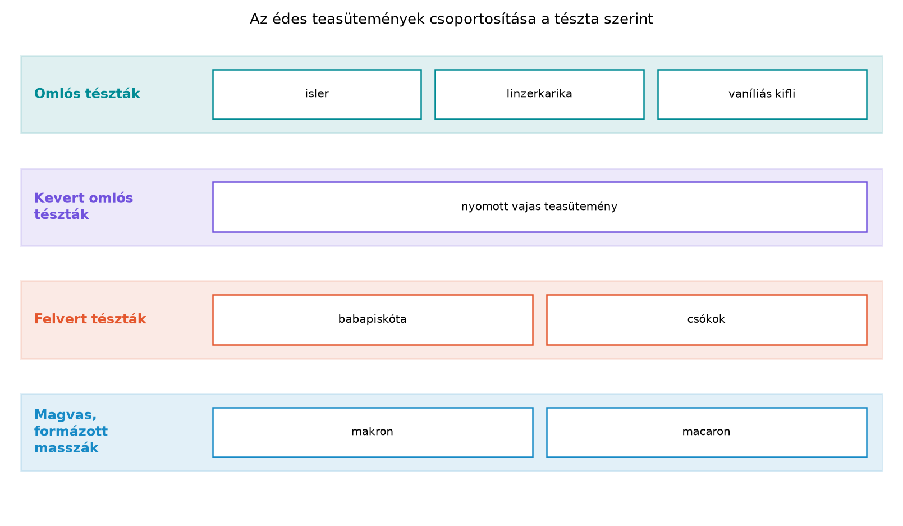
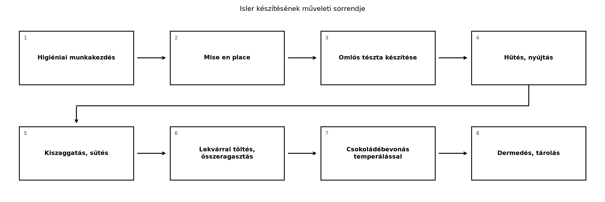

A cukrászüzemben a teasütemény az a sarok, ahol a vendég egy kávé mellé apró, tárolható, látványos édes falatokat vásárol. A reggeli pultban a tálcán egymás mellett sorakoznak a porcukros, lekváros, csokoládéba mártott darabok. Ha a tétel egyenletes méretű, a töltés nem folyik ki, a bevonat fényes, a vendég visszatér. Ha nincs a termékek között rendszer, a sütés és a kikészítés kaotikussá válik. Ebben az alfejezetben a klasszikus édes teasüteményeket tanuljuk meg: omlós, kevert omlós, felvert és magvas/hengerelt tésztákból, töltve, bevonva, díszítve, egységes mérettel.
Képzelj el egy teasütemény-tálcát a hűtött pultban. Az isler sötét, fényes csokoládéba mártott korong, közte lekvár. Mellette linzerkarika, felső lapján három porcukor-sávval, alatta piros lekvár gyűrűje. A vaníliás kifli világos, morzsalékos, porcukorba forgatott félhold. A nyomott vajas teasütemény csillagcsővel formázott, halvány arany. A babapiskóta hosszúkás, száraz, porcukros. A csókok fehér, ropogós, levegős halmocskák. A makronok mandulás korongok, a francia macaron két színes lapja lágy ganache-t fog közre. Mindegyik darab két–négy harapásnyi, és legalább néhány napig megőrzi állagát, ha megfelelően csomagolják.
Definíció. A teasütemény olyan kis méretű, sült cukrászati készítmény, amelyet tea, kávé vagy desszertbor mellé tálalnak. Jellemzően harapható vagy két harapásnyi, szárazabban tartható, részben tartós termék, amely egységes formával, tömeggel és kikészítéssel készül.
A teasüteményeket a tészta típusa szerint csoportosítjuk. Ez a csoportosítás a technológiai választást és a hibakeresést is segíti.

Szabály. A teasütemény-sorozat összeállításakor arra törekedj, hogy a tálcán különböző tésztájú, színű, ízű és kikészítésű darabok legyenek. Így a termékcsalád egyszerre mutatja a szakmai jártasságot, és a vendégnek is változatos választékot ad.
Az omlós tésztákat a Gyúrt omlós tészták: sárga, barna, kakaós, angol, fehér és sós linzer alfejezetben tanultuk. Az édes teasüteményeknél elsősorban a sárga linzer és annak kakaós vagy vaníliás változata kerül elő. A tésztát hidegen, zsiradékkal lazítjuk, a sikért nem dolgozzuk ki. A megsült lap ropogós, morzsalékos.
A kevert omlós tésztát a Kevert omlós tészták alfejezetben mutattuk be. Itt a vajat porcukorral habosítják, a tojást fokozatosan emulgeálják, a lisztet rövid mozdulatokkal keverik. A masszát hidegen, kinyomózsákból, csillagcsővel sütőlemezre nyomják. A nyomás és a hűtés biztosítja, hogy a teasütemény megtartsa a formáját, ne folyjon szét.
A hideg úton készült felvert tésztákat a Hideg úton készült könnyű és nehéz felvertek alfejezetben tanultuk. Az édes teasüteményeknél a könnyű, habbal lazított, kevés lisztet tartalmazó masszák dominálnak.
A sütőmarcipán, makron és macaron technológiáját a Sütőmarcipánok, makronok és nugátok alfejezetben tanultuk. A massza mandulalisztet, porcukrot és tojásfehérjét tartalmaz, és nyomózsákból adagolható vagy hengerelt formába helyezhető.
A teasütemények nagy részét sütés után töltik, ragasztják, vonják be. A munkafázisok sorrendje azért kritikus, mert a sült tésztalapok nedvességre érzékenyek: a lekvár, krém, gyümölcs puhítja a felületet.
Szabály. A sült lapoknak teljesen ki kell hűlniük, mielőtt lekvárral, krémmel töltenéd. A forró tészta a lekvárból gőzt hajt, a felület nedves, ragacsos lesz, a tészta elveszti ropogósságát.
A töltés–ragasztás–mártás sorrendjét és a mártás fogását az isler példáján az alábbi képsor mutatja.
A teasütemény-sorozat kalkulációjában mindig a receptúra-átszámítás és a bevonási veszteség a két fő lépés.
Adott: 30 db linzerkarikához 300 g liszt, 200 g vaj, 100 g porcukor, 20 g tojássárgája, 2 g citromhéj, 150 g lekvár, 50 g porcukor a szóráshoz. Keresett: mennyi nyersanyag kell 120 db-hoz?
Számítás. A szorzószám:
Minden alapanyagot -val szorzunk:
Ellenőrzés: az összes nyersanyag 30 db-nál , 120 db-nál ; a szorzószám helyes. ∎
Adott: 40 db islerhez darabonként 12 g temperált étcsokoládét kell felhasználni. A temperálásnál és bevonásnál 12 % veszteséggel számolunk (tálhoz ragadt csokoládé, próbadarab, lecsorgási maradék). Keresett: mennyi csokoládét kell előkészíteni?
Számítás. A nettó szükséglet:
A veszteség , tehát:
Kerekítve: 546 g étcsokoládét olvasztunk be temperálásra. Ellenőrzés: , a nettó szükségletet fedezi. ∎
Jogszabály. A teasüteményekre is vonatkoznak a vendéglátásban előállított élelmiszerek általános higiéniai szabályai, elsősorban a 852/2004/EK rendelet (élelmiszer-higiénia). A csomagolt vagy ömlesztett termék értékesítésekor a fogyasztók tájékoztatásáról szóló 1169/2011/EU rendelet előírja a 14 jelölendő allergéncsoport feltüntetését. A csokoládébevonatra a kakaó- és csokoládétermékekre vonatkozó 2000/36/EK irányelv előírásai lehetnek irányadóak (ellenőrizendő: Magyar Élelmiszerkönyv vonatkozó előírásai). Az adalékanyagok (színezékek, emulgeálószerek, állományjavítók) a 1333/2008/EK rendelet szerint engedélyezett mennyiségben használhatók fel (ellenőrizendő).
Készíts válogatott édes teasütemény-sorozatot: isler, linzerkarika, vaníliás kifli, nyomott vajas, babapiskóta, csókok, makron és macaron. A hangsúly az egységes méreten, a töltés és bevonás pontosságán, valamint a higiénikus munkán van.
Mérleg, keverőgép (lapát, habverő), hűtő, sütő, nyújtófa, különböző méretű kiszaggatók, sütőlemez, sütőpapír, nyomózsák és csövek, keverőtálak, szita, kenőkések, csokoládé-hőmérő, tálcák, rács, sütőkesztyű.
Tiszta munkaruha, hajháló, kesztyű, ékszer nélkül. Alapos kézmosás. A munkafelületet fertőtlenített, száraz. A nyersanyagokat vizsgáld át: a tojás ép és friss, a vaj hűtött, a liszt száraz, idegen szagú csomagot ne használj fel. A tojásos masszák sütésénél a hőkezelés a kritikus pont: a maghőmérséklet biztonságos elérését sütőhőmérővel ellenőrizd (ellenőrizendő: hatályos útmutató).
Biztonsági korlát. A gépi művelet tanműhelyi vagy üzemi környezetben, oktatás után és felügyelet mellett végezhető; otthon háztartási géppel, kis adagban gyakorolj. A keverőgép leállítása és áramtalanítása előtt a tálba benyúlni tilos. A forró sütőlemezt, tepsit kesztyűvel fogd meg. A forró porcukor, a karamellizálódó cukor és a csokoládé olvasztása égési sérülést okozhat: lassan melegíts, ne hagyd felügyelet nélkül.
Technológiai lap. Isler (omlós, lekvártöltésű, csokoládébevonatú teasütemény)
| Nyersanyag | Mennyiség (g) | Megjegyzés |
|---|---|---|
| Finomliszt | 250 | búzaliszt |
| Vaj vagy margarin | 150 | hideg, kockázva |
| Porcukor | 90 | a tésztához |
| Tojássárgája | 20 | kb. 1 db közepes tojás sárgája (ellenőrizendő: tömegosztály) |
| Kakaópor | 8 | holland kakaópor a sötét színhez |
| Reszelt citromhéj | 2 | kezeletlen citrom héja |
| Só | 1 | |
| Szilvalekvár | 250 | passzírozott, sűrű; kb. 6 g/db |
| Étcsokoládé | 480 | temperált, 12 g/db (a 2. példában 546 g bruttó előkészítve) |
| Összesen (nyersanyag) | 1251 | a sütési veszteséggel a kész tömeg kisebb |
A tészta 521 g; egy 5 cm-es, 3 mm vastag lap kb. 6,5 g, így 80 lap (40 db isler) kb. 520 g tésztát igényel. Egy kész isler kb. 2 sült lap (kb. 11,5 g) + lekvár (kb. 6 g) + csokoládé (kb. 12 g) ≈ 30 g.

A munka végén a gépeket áramtalanítás után tisztítsd meg. A sütőlemezeket, nyomózsákokat, csöveket mosd el. A hulladékot szelektíven gyűjtsd (elkülönítve a szerves hulladékot). A HACCP-naplóban rögzítsd a sütési hőmérsékleteket, a hűtési időket és az eltéréseket. Ha allergén anyagot használtál, jelöld a gyártási tételnél.
A teasütemény-sorozat minőségi ellenőrzése során minden terméknél vizsgáld:
Tünet: a kész sütemény oldalán piros, ragacsos
lekvár látható, a tészta átnedvesedik.
Ok: túl híg lekvár, túl sok töltelék, a lapok nem
hűltek ki, a szaggatott lapok vastagsága egyenetlen.
Megelőzés: sűrű, passzírozott lekvárt használj,
vékonyan kenj, a széleken hagyj szabad sávot, és a lapokat teljesen
hűtsd ki. Javítás: a kész darabot azonnal hűtőbe
tesszük, de a megpuhult tészta már nem hozható helyre; selejtezni kell,
ha a vendég minőségi elvárása sérül.
Tünet: a bevonat nem fényes, ujjlenyomatot hagy,
vagy másnap kifehéredik.
Ok: rosszul temperált csokoládé, magas páratartalom,
túl hideg vagy túl meleg munkakörnyezet, víz került a csokoládéba.
Megelőzés: tartsd be a temperálási hőmérsékleteket,
használj hőmérőt, a munkaterületet 18–22 °C-on tartsd, és óvd a
csokoládét a nedvességtől. Javítás: ha a csokoládé még
folyékony, újratemperálás lehetséges; ha már megszilárdult, csak
leolvasztás után lehet újraönteni, de a termék minősége romlik.
Tünet: a piskóta kívül nagyon kemény, belül pedig
nem sült át főleg vastag daraboknál.
Ok: túl magas sütőhőmérséklet, túl hosszú sütés, vagy
túl vastagra nyomták a masszát.
Megelőzés: 170–190 °C-on süss, a csíkok azonos
vastagságúak legyenek, és tűpróbával ellenőrizz.
Javítás: a nyers belsejű darabokat selejtezd; a jókat
száraz, zárt dobozban tárold.
Egy közepes cukrászüzemben a hétvégi esküvői csomaghoz 120 db-os édes teasütemény-sorozatot rendeltek. A sorozatban isler, linzerkarika, vaníliás kifli, nyomott vajas, csókok és macaron szerepelt. A tanuló a Kevert omlós tészták alfejezetben tanult masszát kikeverte, de nem hűtötte le eléggé: a nyomott vajas tészta szétfolyt. Emiatt az első sütésben 40 db selejt keletkezett. A vezető cukrász a hibát a tészta hűtésével és a sütő hőmérsékletének ellenőrzésével javíttatta. A megmaradt masszát 20 perc hűtőben pihentették, a következő tétel már megtartotta a formát. A csokoládébevonatnál a tanuló a temperálást hőmérővel követte, így a bevonat fényes maradt. A rendelés végül időre elkészült, de a selejt miatt a nyersanyagköltség nőtt. Tanulság: a sorozatnál a hűtési lépések és a sütőhőmérséklet dokumentálása nem hagyható ki.
1. feladat (A) Fogalmazd meg, mi a teasütemény, és sorold fel a négy fő tésztacsoportot egy-egy termékkel!
2. feladat (A) Számold ki, mennyi liszt kell 80 db vaníliás kiflihez, ha 40 db-hoz 250 g lisztet használsz! (Szorzószámmal dolgozz.)
3. feladat (B) Egy üzemben 120 db isler elkészítéséhez 1440 g temperált étcsokoládét használnak. Hány darab isler készíthető 1,5 kg csokoládéból, ha a fajlagos csokoládéfelhasználás azonos? (Vesztséggel most ne számolj.)
4. feladat (B) 60 db makron korongot kell készítened. Egy korong sült tömege 12 g. A massza sütési vesztesége 15 %. Hány gramm nyers masszát kell kikeverned? (Kerekíts grammra.)
5. feladat (C) Hibaelemzés: A nyomott vajas teasüteményed szétfolyik a sütőlemezen. Sorolj fel legalább három lehetséges okot, és mindegyikre adj megelőzést vagy javítást!
6. feladat (D) Készítsd el az isler technológiai lapja szerint a terméket 40 db mennyiségben. Töltsd ki a munkalapot: sütési hőmérséklet, sütési idő, a felhasznált csokoládé hőfoka, a kész darabok tömege. Értékeld a saját terméket a minőségi szempontok alapján (forma, tömeg, bevonat, íz).
1. feladat A teasütemény kis méretű, sült cukrászati készítmény, amelyet tea, kávé vagy desszertbor mellé tálalnak; egységes méretű, harapható, részben tartós. Tésztacsoportok: omlós (isler, linzerkarika, vaníliás kifli), kevert omlós (nyomott vajas), felvert (babapiskóta, csókok), magvas/hengerelt–nyomózsákos (makron, macaron).
2. feladat A szorzószám: . A liszt: . Tehát 80 db vaníliás kiflihez 500 g liszt kell.
3. feladat A fajlagos csokoládéfelhasználás változatlan, ezért a darabszám egyenes arányban nő. 1,5 kg csokoládé = 1500 g. A 120 db-hoz 1440 g kell, tehát a fajlagos felhasználás (megegyezik a technológiai lap 12 g/db értékével). 1500 g-ból db isler készíthető.
4. feladat A sült korongok össztömege: . Ezt nettó sült tömegként kezeljük, mert a veszteség a nyers masszára vonatkozik. A veszteség . Képlet:
Kerekítve 847 g nyers masszát kell kikeverni.
5. feladat Lehetséges okok és megelőzések: -
Túl meleg massza: a vaj megolvadt, a massza híg.
Megelőzés: a masszát hűtőben pihentetjük, a kinyomott darabokat
is hidegen tartjuk.
- Alacsony sütőhőmérséklet: a tészta a melegben
szétfolyik, mielőtt a szerkezet rögzülne. Megelőzés:
előmelegített sütő, 180–190 °C.
- Kevés liszt vagy túl sok tojás: a massza túl lágy.
Megelőzés: a receptúra szerinti arány, az adagolás
pontossága.
- Túlkevert massza: a liszt sikérje kifejlődhet, a
massza nem tartja a formát. Megelőzés: rövid keverés, a liszt
hozzáadása csak a végén.
Javítás: ha a massza túl lágy, kis liszttel vagy őrölt mandulával
sűríthető (de az omlósság romlik), vagy hidegen tartva
újraformázható.
6. feladat A gyakorlati feladat értékelési szempontjai: a termék formája egységes, a bevonat fényes, a tészta morzsalékos, a tömeg 40 db-nál az előírt tartományban van. A munkalap tartalmazza a sütési hőmérsékletet (175–185 °C, tájékoztató), a csokoládé hőfokát (31–32 °C étcsokoládé), a kész darabok átlagos tömegét. A dokumentálásban rögzítsd az eltéréseket és a selejt okát.
Az édes teasütemények kis méretű, sült, részben tartós termékek, amelyeket omlós, kevert omlós, felvert és magvas/hengerelt–nyomózsákos masszákból készítünk. A klasszikus omlós termékek: isler, linzerkarika, vaníliás kifli; a kevert omlós nyomott vajas teasütemény; a felvert: babapiskóta, csókok; a magvas: makron és macaron. A sült lapoknak ki kell hűlniük, mielőtt lekvárral vagy krémmel töltenénk. A csokoládébevonat csak temperálva fényes, tartós; a temperálás hőfokai a Temperálási módszerek, temper-ellenőrzés és csokoládéhibák szerint étcsokoládénál 31–32 °C munka-hőmérséklet (ellenőrizendő). A receptúrák átszámításánál a szorzószámot használjuk: . A bevonatveszteségnél a bruttó mennyiséget a képlettel számítjuk. A termékcsoport allergénjei: glutén, tojás, tej, diófélék, szója (a csokoládé és a felhasznált lekvár jelölése szerint). A Továbbvitt eredmény: az édes teasütemény-sorozat díszítését, minőségi jellemzőit és kalkulációját a Sós teasütemények alfejezetben használjuk tovább, ahol a sós változatok hasonló technológiával készülnek.
A szövegben megadott összes hőmérséklet, idő, mennyiség és arány tájékoztató jellegű. A pontos értékeket a felhasznált nyersanyag gyártói adatlapja, a sütő és a forma jellemzői, valamint az érvényes üzemi technológiai előírások határozzák meg.